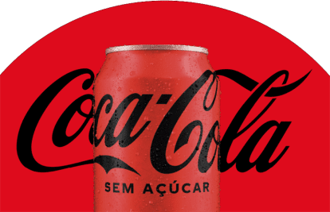

Coca-Cola

Coca-Cola é um refrigerante carbonatado vendido em lojas, restaurantes, mercados e máquinas de venda automática em todo o mundo. Ele é produzido pela The Coca-Cola Company, sediada em Atlanta, Estados Unidos, e é muitas vezes referido apenas como Coca-Cola (a marca registrada da empresa Coca-Cola nos Estados Unidos desde 27 de março de 1944). Originalmente concebida como um remédio patenteado quando foi inventada no final do século XIX por John Pemberton, a Coca-Cola foi comprada pelo empresário Asa Griggs Candler, cujas táticas publicitárias levaram a bebida ao domínio do mercado de refrigerantes no mundo ao longo do século XX.
A empresa produz o produto concentrado, que depois é vendido para engarrafadores licenciados pela Coca-Cola em todo o mundo. Os engarrafadores, que detêm contratos de exclusividade territorial com a empresa, colocam a bebida concentrada em latas e garrafas junto com água filtrada e adoçantes. Os engarrafadores, em seguida, vendem, distribuem e comercializam a Coca-Cola para lojas de varejo e máquinas de venda automática.
Fundação
A história da Coca-Cola inicia com a chegada do farmacêutico John Pemberton na cidade de Atlanta nos Estados Unidos, logo após a Guerra Civil americana. Ele havia acabado de participar da guerra e estava disposto a mudar de vida, em busca de uma nova clientela que comprasse suas ideias e medicamentos. Por não ter nenhuma habilidade em vendas, sempre fracassou em suas criações, até conhecer o contador Frank Robinson, que acaba tornando-se sócio.
Em 1902, a Coca-Cola passa a ser vendida em garrafas com "tampa coroa", até então, era comercializada em garrafas com tampa de rolha. Em 1903, a cocaína, antes presente em 9 miligramas por copo de Coca-Cola, foi retirada da fórmula da bebida. Em 1909, nos Estados Unidos, cerca de 400 fábricas já engarrafavam a Coca-Cola, sendo, a maioria delas era de propriedades de empresas familiares.